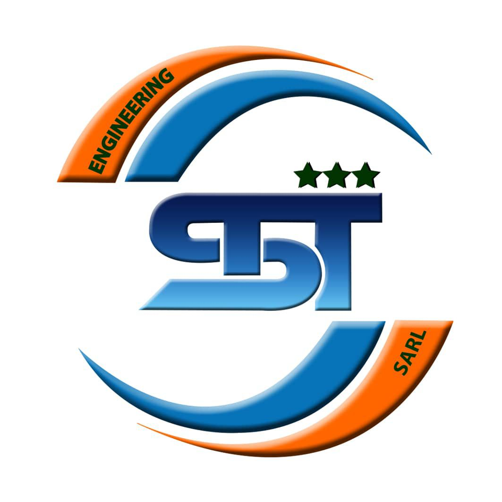
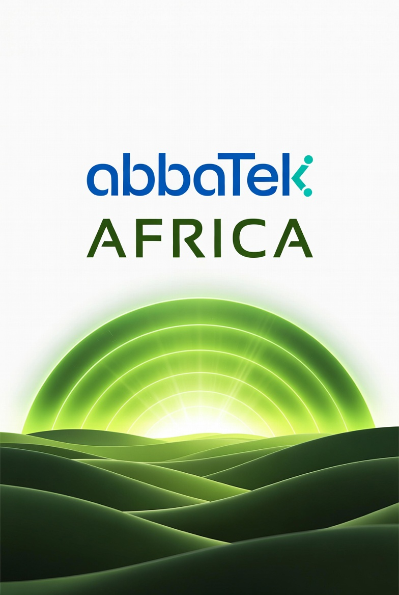

En partenariat avec AbbaTek, l’Institut STT transforme les génies locaux en fondateurs de startups "Deep-Tech" prêts pour l'investissement global.


AbbaTek Africa centralise ses opérations régionales au sein du campus STT pour gérer ses futurs pilotes environnementaux.
Nos ingénieurs et apprenants collaborent via une plateforme d'apprentissage de niveau mondial.
Un pipeline direct sécurisant des profils hautement compétents en Apprentissage Automatique (Machine Learning) et Génie Logiciel.
Réservé aux Analystes et Auditeurs.
🌐 Évaluer l'Infrastructure AbbaTek Group (CA) ↗ 📊 Contacter l'Équipe de Direction Technique ↗